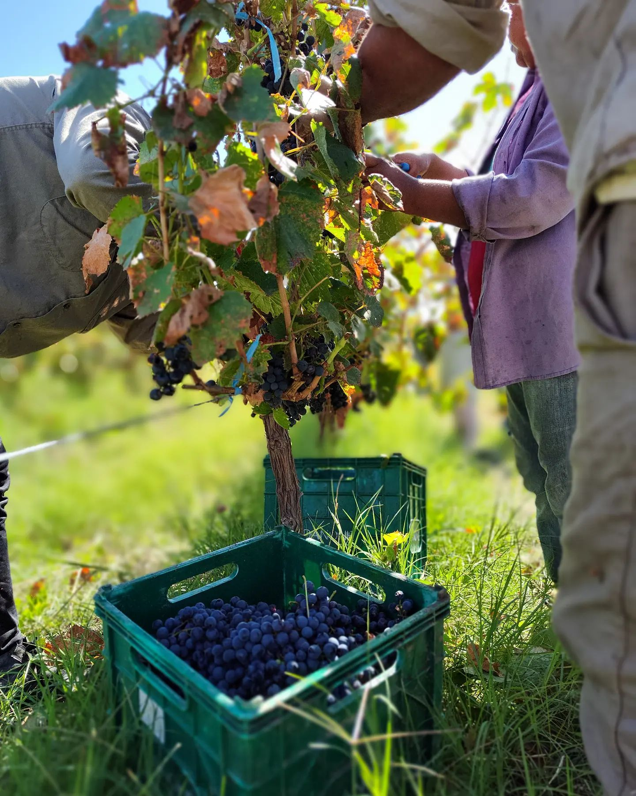

Una bodega familiar en el corazón de Catamarca
Somos una bodega familiar ubicada en los Valles de Hualfín, Catamarca, Argentina. Desde el 3 de noviembre de 2016 elaboramos vino artesanal Malbec con el cuidado de quien sabe que cada botella lleva el alma de nuestra tierra y el trabajo de nuestras manos.
Nuestro viñedo crece a más de 1.500 metros sobre el nivel del mar, donde el sol fuerte del día y las noches frescas le dan a la uva una personalidad única. La amplitud térmica del valle, combinada con suelos pobres en materia orgánica, obliga a la planta a concentrar todo su sabor en cada racimo.
Sin aditivos, sin atajos — solo uva, tiempo y amor por el vino bien hecho. Cada cosecha es una decisión familiar: cuándo cosechar, cuánto tiempo dejar reposar el vino, cómo respetar lo que la tierra nos da.

Los Valles de Hualfín son un rincón privilegiado de la Puna catamarqueña. La altura, el sol intenso y las temperaturas nocturnas bajas crean las condiciones perfectas para que el Malbec exprese su carácter más profundo. Aquí, la naturaleza hace la mayor parte del trabajo — nosotros solo la acompañamos con respeto.
Contactarnos